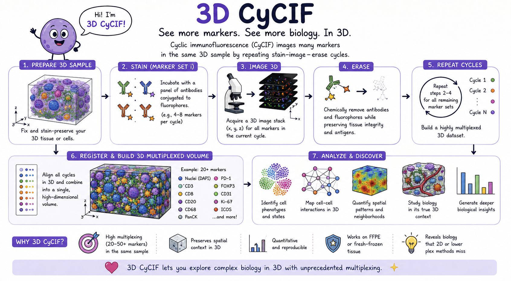
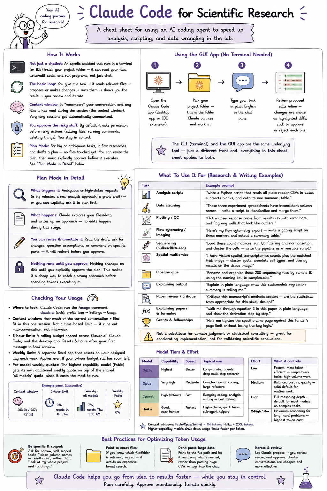
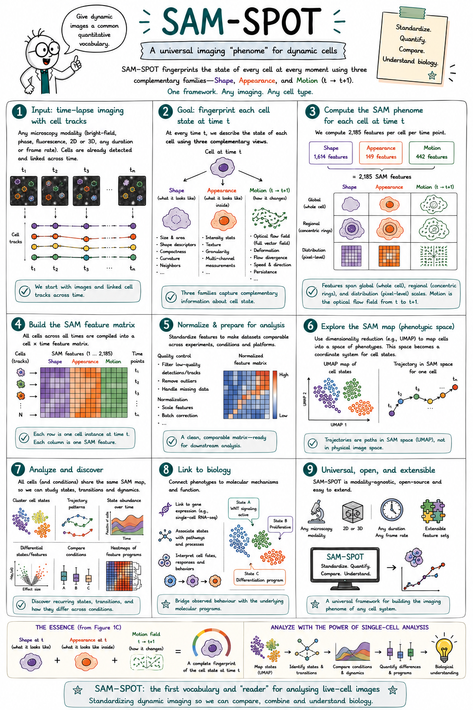
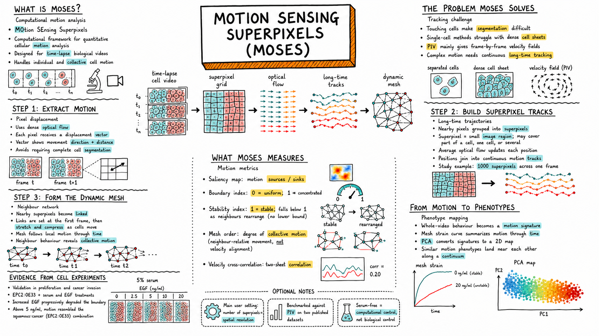
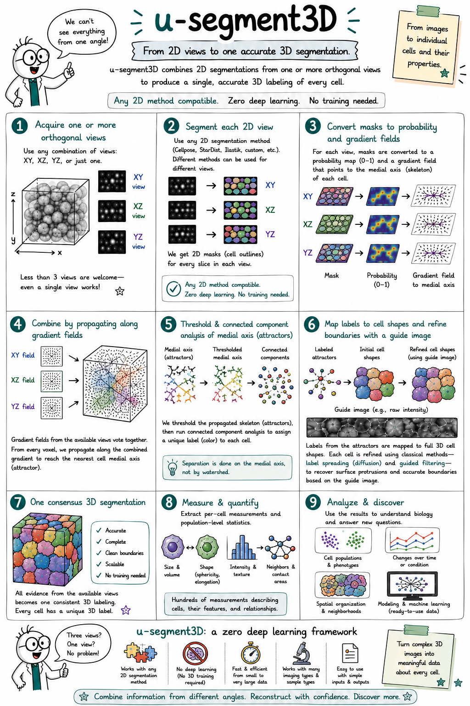
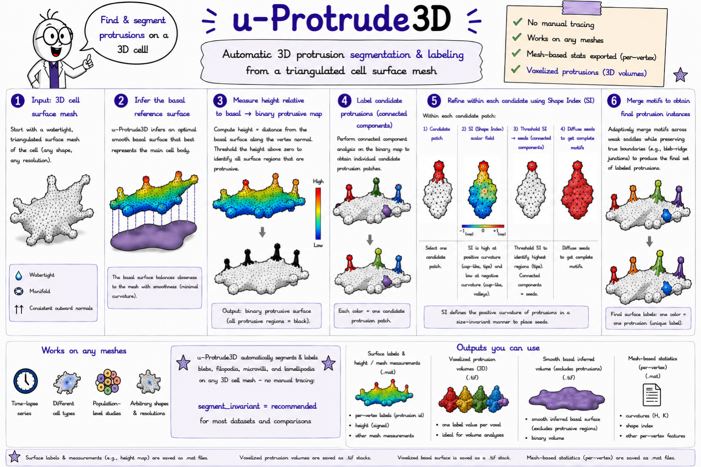
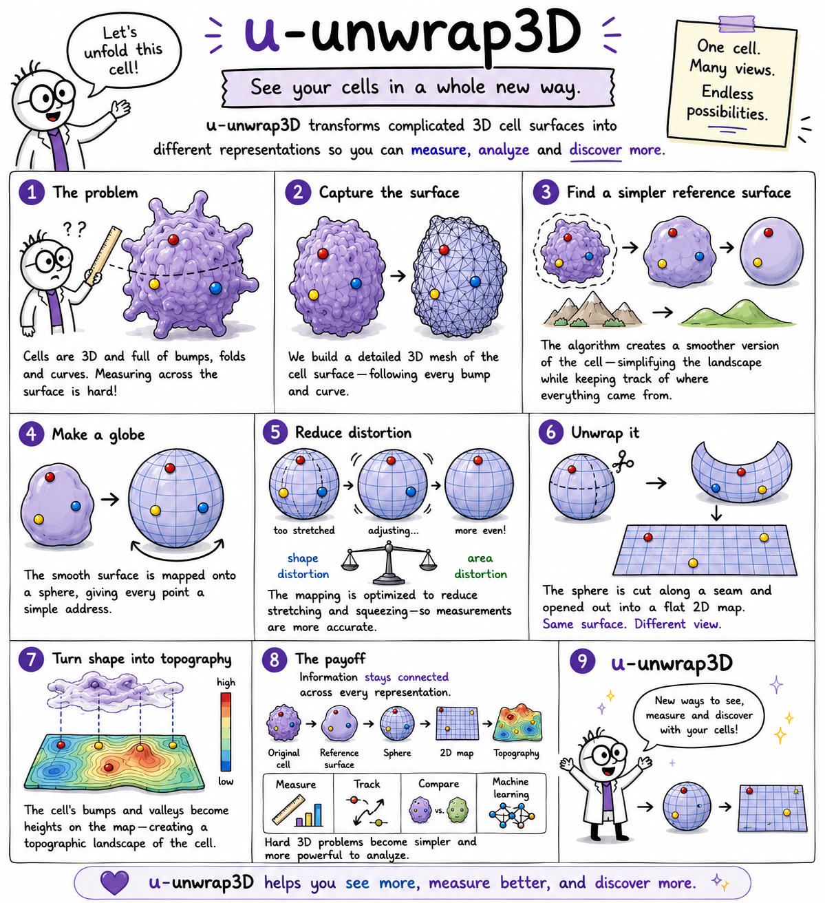
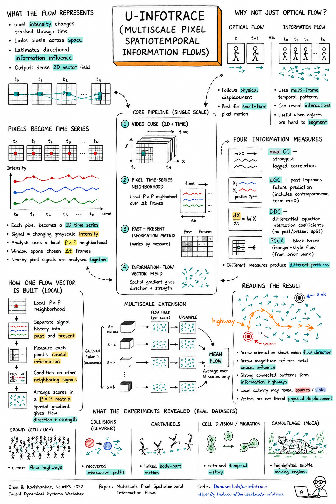

Pedagogical talks, tutorials, and infographics from BIA Lab and collaborators on computational methods, multiplexed imaging, quantitative cell biology, and practical tools like Claude Code.

Laboratory of Systems Pharmacology, Harvard Medical School
A one-page visual summary of 3D CyCIF, which images many markers (20–50+) in the same intact 3D sample by repeating stain–image–erase cycles — preserving spatial context to map cell states, neighborhoods, and signaling niches in their true 3D architecture.

BIA Lab · Getting-Started Guide
A one-page cheat sheet for using an AI coding agent to speed up analysis, scripting, and data wrangling in the lab — covering the basic workflow, Plan Mode, usage limits, model tiers, and best practices for optimizing token usage.

BIA Lab · Software Infographic
A one-page visual summary of SAM-SPOT, the standardised framework for fingerprinting cell state at every moment using three complementary feature families — Shape, Appearance, and Motion.

BIA Lab · Software Infographic
A one-page visual summary of MOSES, which tracks dense optical flow through superpixel grids to build long-time motion trajectories and dynamic meshes — quantifying collective cellular motion phenotypes in time-lapse video without requiring single-cell segmentation.

BIA Lab · Software Infographic
A one-page visual summary of u-segment3D, which combines 2D segmentations from one or more orthogonal views into a single consensus 3D cell labeling — compatible with any 2D segmentation method and requiring no 3D training.

BIA Lab · Software Infographic
A one-page visual summary of u-Protrude3D, which automatically detects and labels individual protrusions — blebs, filopodia, microvilli, lamellipodia — on any triangulated 3D cell surface mesh, with no manual tracing required.

BIA Lab · Software Infographic
A one-page visual summary of u-Unwrap3D, which transforms complicated 3D cell surfaces into canonical representations — topographic maps, spherical parameterisations, and unfolded 2D images — for quantitative morphology and membrane-signal analysis.

BIA Lab · Software Infographic
A one-page visual summary of u-infotrace, which estimates directional information flow between pixels across space and time — revealing causal influence patterns, information highways, and sources/sinks that optical flow alone cannot capture, via four interchangeable causal measures across a multiscale pyramid.
BioImaging North America · Lattice Light-Sheet User Group
Cells change shape. Signals move through them. The question this talk addresses is whether those two things are connected causally, and if so, in which direction. Felix presents the computational pipeline the lab has built to answer this: mapping molecular signals onto 3D cell surfaces at single-cell resolution, parameterising those surfaces into canonical coordinate systems to enable comparison across cells and time points, and applying information-theoretic measures to identify where and when morphology predicts downstream signaling. The talk draws on lattice light-sheet microscopy data and introduces tools including u-segment3D for universal 3D cell segmentation to extract a high-resolution cell surface, u-Unwrap3D for mapping signals onto those surfaces, and u-infotrace for quantifying information flow between signals.
Laboratory of Systems Pharmacology, Harvard Medical School · LifeCanvas Technologies
Standard histology sees a handful of markers. This talk covers what becomes possible when you can measure one hundred or more proteins in intact tissue at subcellular resolution. Clarence Yapp from the Sorger Lab at Harvard Medical School presents the experimental and computational pipeline behind cyclic immunofluorescence (CyCIF) and volumetric multiplexed imaging: how tissue sections are repeatedly stained and imaged, how u-segment3D is used to identify every single cell in the volumetric tissue, how the resulting image stacks are registered and segmented, and how the spatial proteomics maps that emerge reveal the cell states, immune niches, and signaling architectures that distinguish diseased tissue from healthy tissue. The talk is a practical guide to the full stack, from antibody panel design to neighbourhood analysis.
BIA Lab · Software Tutorial Series
A practical walkthrough of the full SAM-SPOT pipeline. The tutorial covers installation, loading time-lapse imaging data, running automated cell segmentation, computing SAM (Shape, Appearance, Motion) feature representations for each cell, performing unsupervised clustering to identify phenotype groups, and visualising and comparing phenotype distributions across experimental conditions. Intended for researchers who want to get the pipeline running on their own data from scratch.
BIA Lab · Pipeline Schematic
An animated schematic of the full SAM-SPOT pipeline. Starting from the observation that cell state has three complementary axes — shape, appearance, and motion — the explainer walks through how 2185-dimensional SAM feature vectors are computed for every cell, how UMAP embeds all cells from all timepoints and timelapses into a single phenomic landscape, and how that landscape is then split into two analytical paths: discrete phenotype clustering with stacked-bar dynamics and Markov transition analysis, and continuous trajectory inference. The final scene shows how grouping SAM features into interpretable modules reveals which aspects of cell biology drive each phenotype cluster.